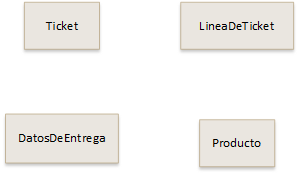
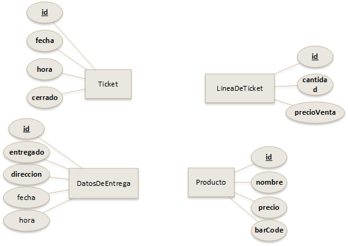

2.5.- Modelo de datos en JPA
Caso práctico
Juan y María le han dado una vuelta de tuerca a su mini proyecto. Ada ha estado reunida esta mañana con el cliente, y, aunque todavía está afinando los términos del contrato y del producto a desarrollar, Ada les ha adelantado que en el software que quiere el cliente debe poder indicarse la dirección de envío de la compra.
María ha decidido investigar qué debería modificar en su proyecto de prueba, el mini punto de venta, aprovechando que JPA les da más flexibilidad a la hora de desarrollar. Después de conseguirlo, se lo comenta a Juan:
—Mira Juan, he añadido otra entidad al proyecto, una llamada DatosDeEntrega, asociada a cada ticket. Es bastante sencillo la verdad.
—Genial, algo así es lo que comentó Ada que se necesitará en el proyecto real del cliente. Si seguimos a este ritmo vamos a terminar el proyecto antes de que se firme el contrato —dice Juan notablemente contento.
Como ya se ha comentado antes, JPA permite almacenar objetos directamente en la base de datos. Pero para que esto sea posible, es necesario definir lo que se denomina un modelo de datos.
Un modelo de datos, como ocurre en el modelo Entidad-Relación o en el modelo Relacional, consiste en una definición previa del esquema de la información a almacenar. Algo así ya se vio en apartados anteriores, por ejemplo, al crear las tablas en una base de datos SQL. Cuando creamos las tablas en SQL estamos definiendo el modelo de datos.
Afortunadamente, el modelo de datos en JPA es más sencillo, y se define a través de objetos Java, lo que se denomina POJO (Plain Old Java Objects), también llamados como objetos ligeros. Eso es una gran ventaja, dado que para definir cómo serán los datos a almacenar en la base de datos, utilizamos simplemente clases Java que ya conocemos. Nos aprovecharemos de una ventaja de JPA, que es la de crear la estructura necesaria en la base de datos de forma automática y transparente.
Las clases que conformarán el modelo de datos en JPA se llamaran entidades. Si conoces el modelo Entidad-Relación, verás que hay cierta similitud entre dicho modelo y el modelo de datos en JPA. Una entidad JPA es conceptualmente similar a una entidad en el modelo Entidad-Relación. Una entidad es, en definitiva, un concepto real o abstracto que necesito en mi programa: cuenta bancaria, persona, documento, producto, etc.
Veamos cómo serían las entidades del software de mini punto de venta:

También, igual que ocurre en el modelo entidad-relación, las entidades JPA tienen atributos. Un atributo de una entidad JPA será simplemente un atributo en una clase. Si añadimos atributos a nuestro modelo, quedaría algo así:

Y por último, JPA también permite indicar que relaciones hay entre las entidades. ¿Te suena? Si conoces el modelo entidad-relación seguramente sí. Las relaciones indican cómo las entidades están vinculadas entre sí. Veamos qué relaciones habría en el modelo de datos que tenemos entre manos.

En JPA podemos tener relaciones de uno a muchos, de uno a uno, de muchos a muchos, de herencia, etc. La pregunta ahora es, ¿cómo pasamos este modelo de datos a un modelo JPA? Para definir el modelo de datos en JPA escribiremos clases con anotaciones.
Dos ejemplos de anotaciones muy usadas en Java son @Override y @Deprecated:
@Override
public String toString()
{
return a;
}
@Deprecated
public String convertirACadena()
{
return a;
}En el código anterior, las anotaciones indican información adicional sobre los métodos subsiguientes. La anotación @Override indicará que el método toString está sobrescribiendo la versión heredada de la clase padre, y @Deprecated está indicando que el método convertirACadena está desfasado y no debería usarse. En JPA veremos anotaciones asociadas a atributos, métodos y clases que permitirán detallar cómo será nuestro modelo de datos.